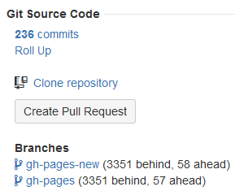

The JIRA Git Plugin is an add-on for your existing JIRA server that combines the data in your Git repository with the projects and issues in JIRA.
With Git Integration Plugin for JIRA, start working with Git in the familiar JIRA interface.
Using Atlassian's marketplace system, a JIRA administrator can install the Git Integration Plugin for JIRA add-on without ever leaving the web browser.
Easily install the add-on via Atlassian Universal Plugin Manager:
Login to your Atlassian account, when prompted, to acquire the license based on your selected license mode.
No need to do git server command lines to copy or configure XML files.
For manual installation or via Atlassian Marketplace, see
Git Integration Plugin for JIRA add-on - Installation
 .
.
Configure SSH keys via Administation > Manage Add-ons > Git Integration Plugin for JIRA > SSH Keys.
For a more detailed information about SSH keys, configuring and generating
SSH keys for git hosting systems, and associating SSH keys to selected
repositories, see
Git Integration Plugin for JIRA add-on - Working with SSH Keys
.
Manage git repositories linked to your JIRA server via Administration > Manage Add-ons > Git Integration Plugin for JIRA > Git Repositories. Use the Actions icon to edit, delete or reindex selected repositories.
To connect a repository with the Git add-on, click Connect to Git Repository on the Manage Git Repositories page.

Enter required Repository Location based on the Location Type examples. Click Next.
The newly added repository will appear on the list. Edit or Reindex repositories via the Actions command.
Go to the Advanced setup of the Connecting to Git Repository wizard if you want more control on connecting your git repository to JIRA.
All Git server repositories are supported including:
An unlimited number of repositories are supported.
If your Git host configuration requires web linking, see
Git Integration for JIRA add-on - Web Linking
.
The git commit will get associated with the JIRA issue if the start of the commit message includes the exact issue ID. Git Integration for JIRA will automatically index new commits and associate the referenced issue.
Refer to the following examples:
If you want to enforce the commit with a hook, please install this Git commit hook script. Commit-msg Hook
Smart commits allows your team to perform actions on JIRA issues from a single commit. Users can enter the issue key and the desired action such as time tracking or closing an issue.
The smart commit processing is active by default and can be enabled/disabled via the repository configuration.
Example:
TEST-100 #time 4h 30m #comment Fixed code #resolve
Logs specified #time to the issue, TEST-100; adds the #comment 'Fixed code' and resolves the issue.
Users must have 'View Development Tools' permission in order to view commit information on the issue page.
Viewing commit code diffs in JIRA:
Git links are now available and can be accessed on the code review developer panel.
The user will get notifications when watching an issue or repository. The user will receive repository commit notifications if that repository is being watched by the user. If the user watches an issue, any commit related to the issue will be sent to that user as notifications.
The Repository Browser allows users to view git repositories of configured projects via the Git menu on the JIRA dashboard.
Compare commits from the two branches of the current repository using the Compare tab.
The Git Integration Plugin for JIRA add-on has added JQL operators and fields
to query JIRA using JQL and git context via the JIRA search.
Example:
gitBranch in (Version-5.2, Version-5.3)
Returns the search result for all issues referenced by a git commit that has branch Version-5.2 and branch Version-5.3.